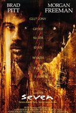

Crime,Drama,Mystery
1995
A sole survivor tells of the twisty events leading up to a horrific gun battle on a boat, which began when five criminals met at a seemingly random police lineup.
The image is a link.Click on it
Mystery,Sci-Fi,Thriller
2017
A young blade runner's discovery of a long-buried secret leads him to track down former blade runner Rick Deckard, who's been missing for thirty years.
The image is a link.Click on it

Crime,Drama,Mystery
1995
Two detectives, a rookie and a veteran, hunt a serial killer who uses the seven deadly sins as his motives.
The image is a link.Click on it
Comedy,Drama,Biography
2017
The journey that led to Charles Dickens' creation of "A Christmas Carol," a timeless tale that would redefine the holiday.
The image is a link.Click on it